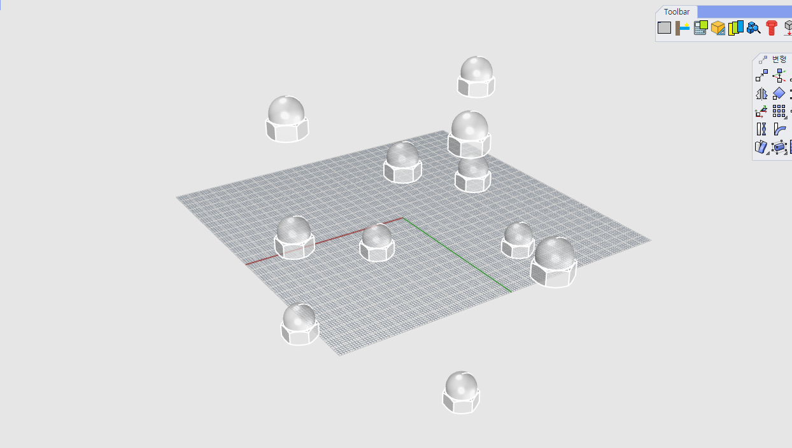
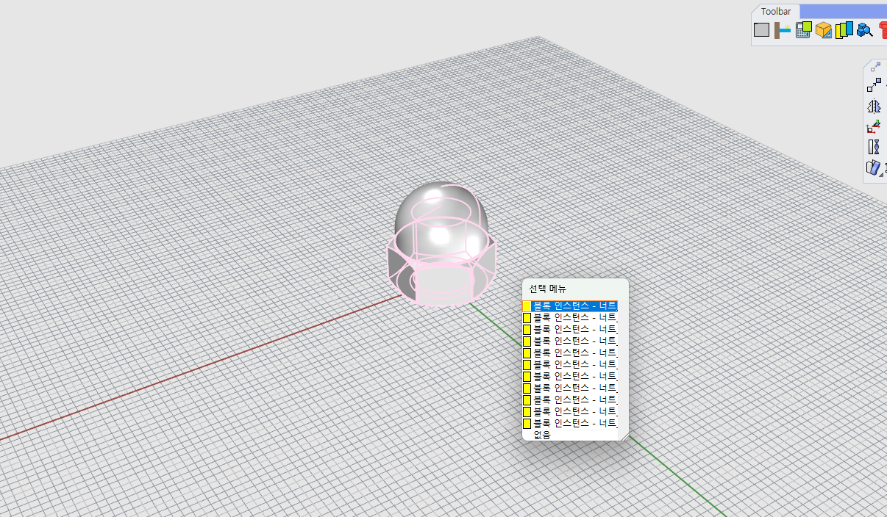

MoveEachObjectToOrigin
MoveEachObjectToOrigin :
선택한 하나 또는 여러 객체를 각각 바닥 기준으로 0,0 위치에 이동합니다.
Steps
이동할 객체(여러 개 또는 단일) 선택
MoveEachObjectToOrigin 명령 실행
기준점(0,0)으로 자동 이동 확인
 
Note
각 객체가 별도로 0,0 위치로 이동되며, 원래 위치에는 남지 않습니다.